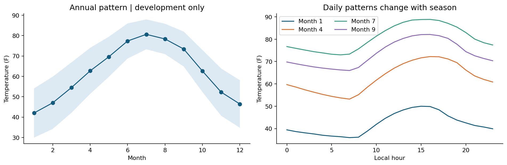
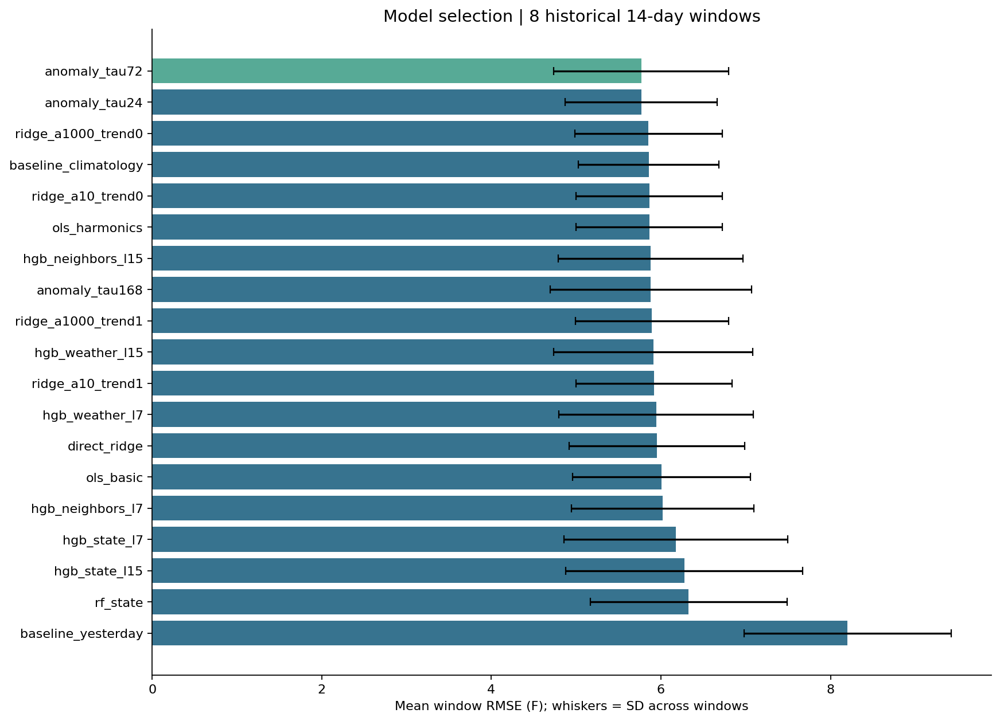
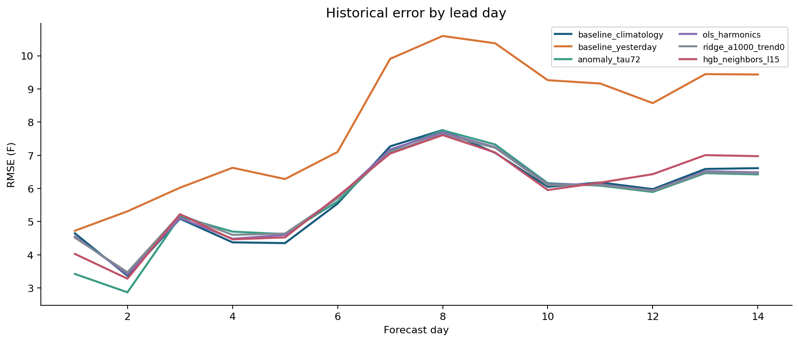
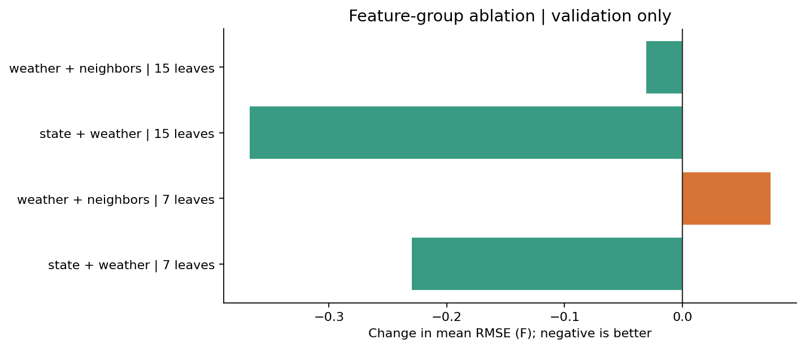
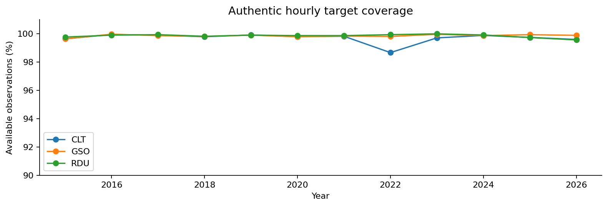
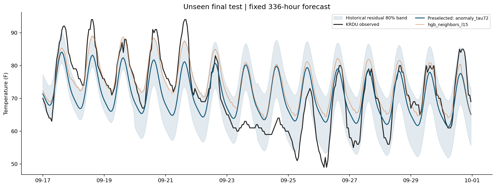
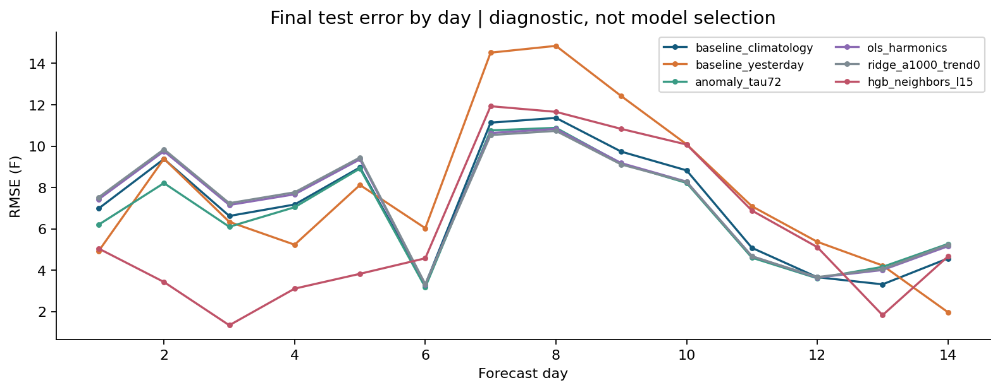
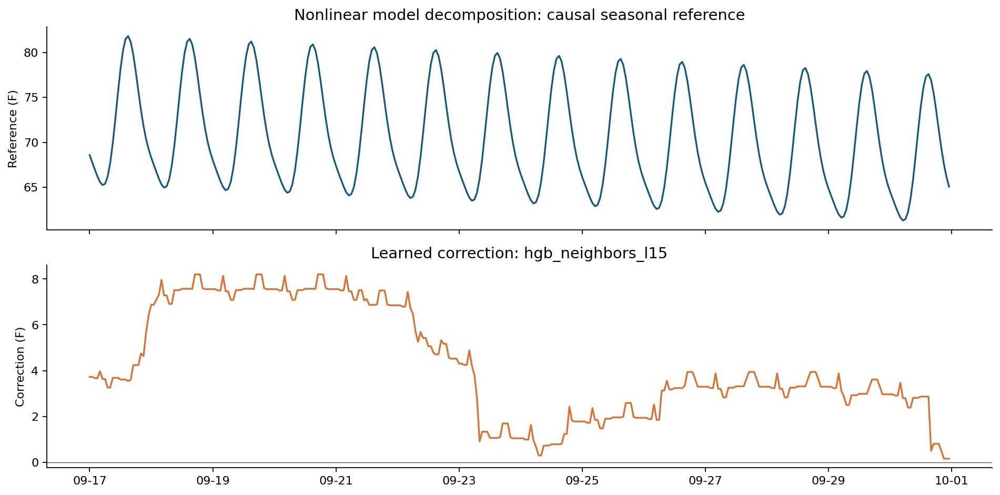

One forecast issued at 2026-09-17 00:00 EDT, covering 336 hours. Station observations, Fahrenheit.
| model | selected_before_test | n | rmse_f | mae_f | bias_f | r2 |
|---|---|---|---|---|---|---|
| baseline_climatology | False | 336 | 7.654 | 6.317 | -0.124 | 0.443 |
| baseline_yesterday | False | 336 | 8.745 | 7.057 | 2.307 | 0.272 |
| anomaly_tau72 | True | 336 | 7.307 | 6.097 | -0.272 | 0.492 |
| ols_harmonics | False | 336 | 7.653 | 6.398 | -0.695 | 0.443 |
| ridge_a1000_trend0 | False | 336 | 7.669 | 6.423 | -0.775 | 0.440 |
| hgb_neighbors_l15 | False | 336 | 6.969 | 5.298 | 3.386 | 0.538 |
Authentic test labels: 336/336. Historical 80% band test coverage: 64.6%. No post-test selection.
These development scores were used for selection and are not an independent final-test estimate.
| model | mean_rmse_f | sd_rmse_f | mean_mae_f | worst_fold_rmse_f | mean_fit_seconds | folds | complexity |
|---|---|---|---|---|---|---|---|
| anomaly_tau72 | 5.768 | 1.034 | 4.631 | 7.173 | 0.037 | 8 | 3 |
| anomaly_tau24 | 5.768 | 0.898 | 4.629 | 7.020 | 0.037 | 8 | 3 |
| ridge_a1000_trend0 | 5.854 | 0.872 | 4.743 | 7.036 | 0.105 | 8 | 2 |
| baseline_climatology | 5.855 | 0.828 | 4.707 | 7.328 | 3.341 | 8 | 0 |
| ridge_a10_trend0 | 5.863 | 0.861 | 4.740 | 7.024 | 0.102 | 8 | 2 |
| ols_harmonics | 5.863 | 0.861 | 4.740 | 7.024 | 0.113 | 8 | 2 |
| hgb_neighbors_l15 | 5.879 | 1.090 | 4.744 | 7.831 | 2.191 | 8 | 6 |
| anomaly_tau168 | 5.881 | 1.189 | 4.740 | 7.443 | 0.036 | 8 | 3 |
| ridge_a1000_trend1 | 5.895 | 0.905 | 4.746 | 7.092 | 0.107 | 8 | 2 |
| hgb_weather_l15 | 5.909 | 1.173 | 4.730 | 8.147 | 2.010 | 8 | 6 |
| ridge_a10_trend1 | 5.918 | 0.920 | 4.759 | 7.084 | 0.107 | 8 | 2 |
| hgb_weather_l7 | 5.946 | 1.147 | 4.758 | 8.060 | 1.671 | 8 | 6 |
| direct_ridge | 5.951 | 1.035 | 4.773 | 6.975 | 0.487 | 8 | 4 |
| ols_basic | 6.004 | 1.049 | 4.918 | 7.140 | 0.089 | 8 | 1 |
| hgb_neighbors_l7 | 6.020 | 1.077 | 4.843 | 7.980 | 1.813 | 8 | 6 |
| hgb_state_l7 | 6.175 | 1.317 | 4.970 | 8.382 | 1.326 | 8 | 6 |
| hgb_state_l15 | 6.276 | 1.396 | 5.110 | 8.065 | 1.598 | 8 | 6 |
| rf_state | 6.327 | 1.159 | 5.112 | 7.688 | 28.638 | 8 | 7 |
| baseline_yesterday | 8.202 | 1.224 | 6.609 | 9.647 | 0.041 | 8 | 0 |
| leaves | added_group | against | mean_rmse_change_f | improved_folds | folds |
|---|---|---|---|---|---|
| 7 | weather | state | -0.230 | 4 | 8 |
| 7 | neighbors | weather | 0.075 | 5 | 8 |
| 15 | weather | state | -0.367 | 4 | 8 |
| 15 | neighbors | weather | -0.030 | 6 | 8 |








Routine :45–:59 reports are mapped to the following nominal hour. An original-publication archive is unavailable, so the 15-minute availability buffer is an assumption. Historical corrections may differ from observations available in real time. Empirical intervals do not have guaranteed conditional coverage. Station-only 14-day forecasting has limited information about incoming weather. Effects and ablations explain predictions, not causal effects. Missing evaluation labels are excluded, never interpolated.
Data: Iowa Environmental Mesonet. Audit files: freeze manifest and test access audit.